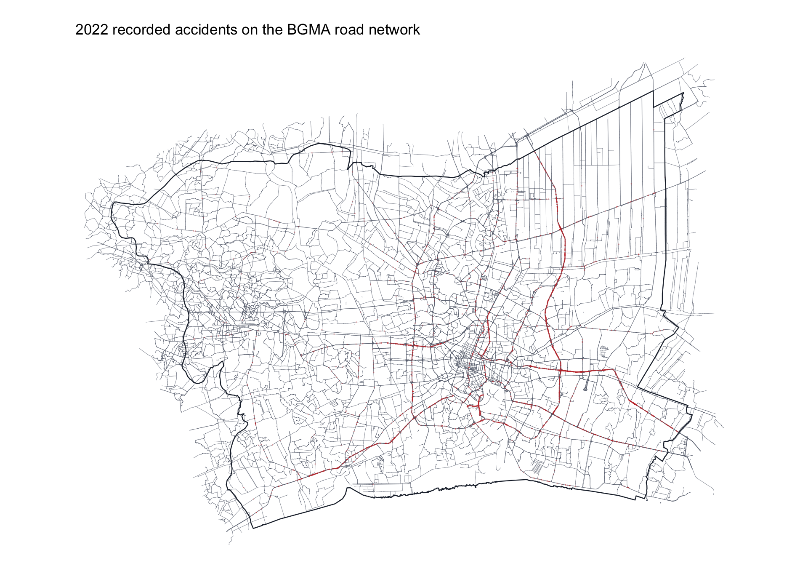
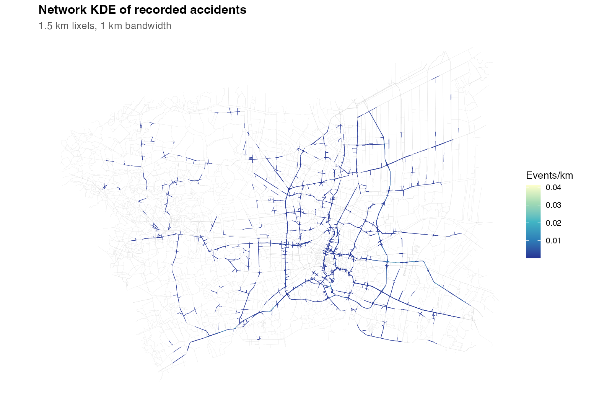
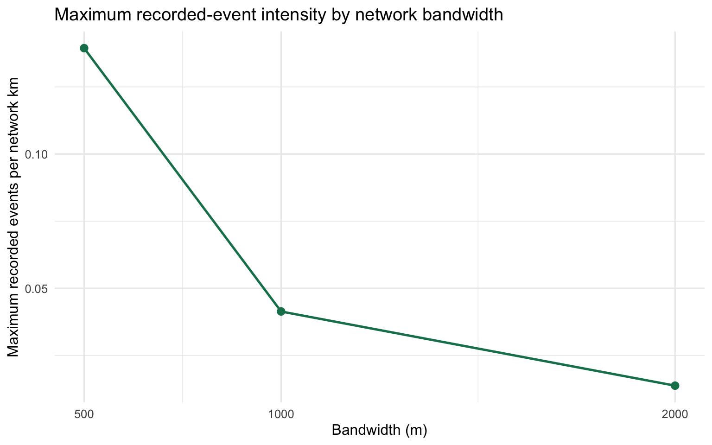
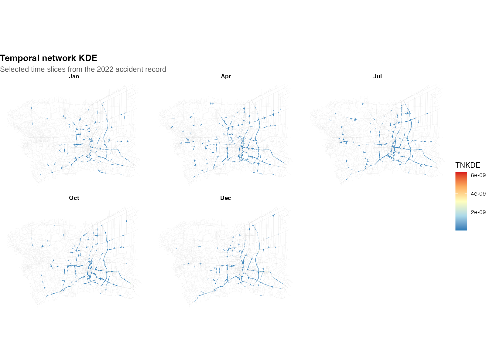
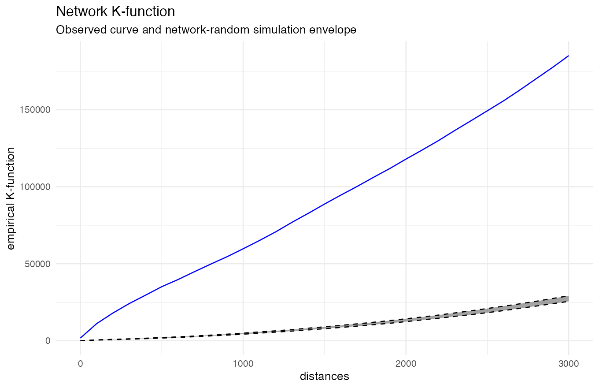
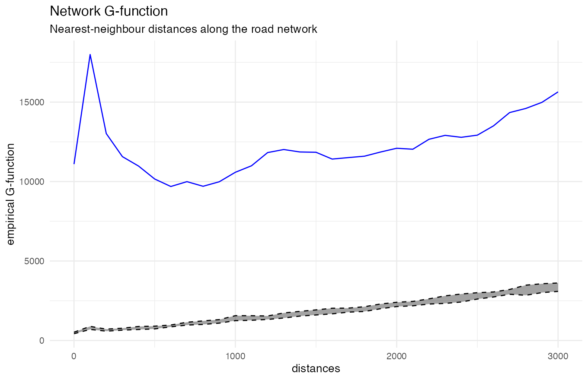
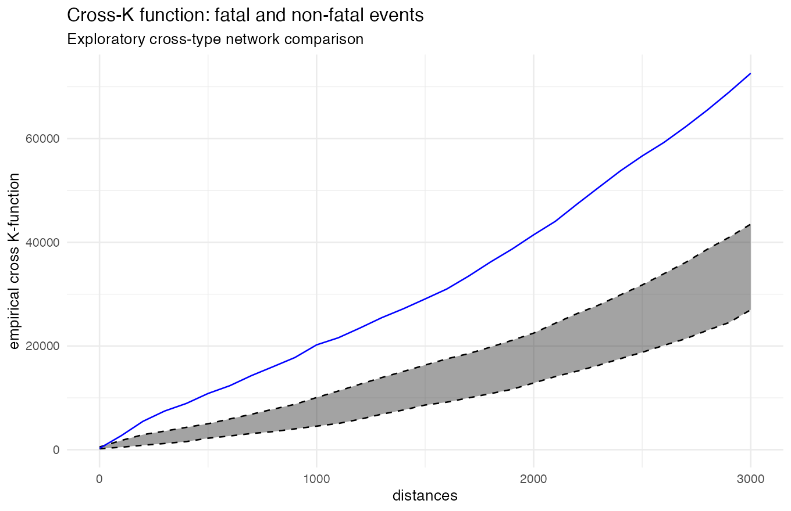
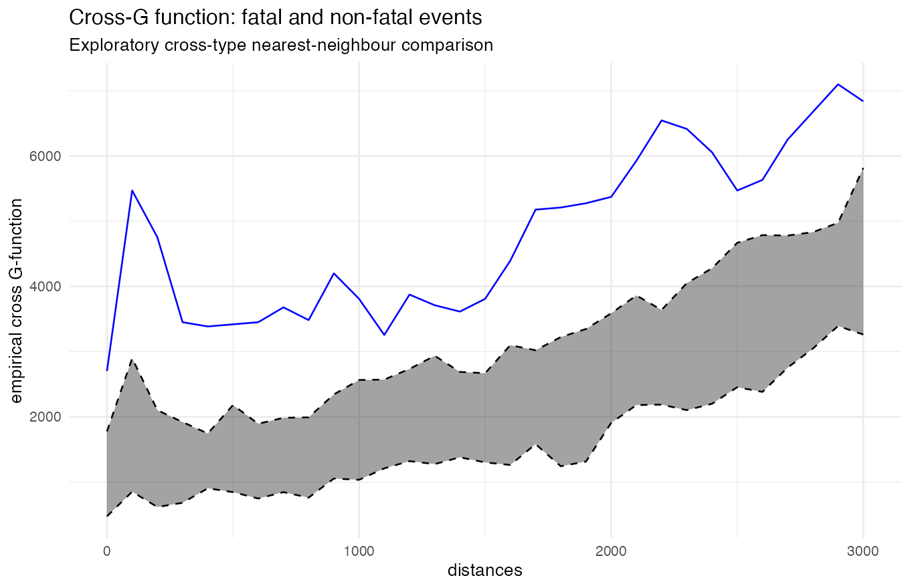

Executive Summary
2026-09-27
Where and when were recorded road accidents concentrated along the Bangkok Greater Metropolitan Area road network in 2022?
The report asks four questions:
The results describe recorded events. They are not exposure-adjusted crash-risk estimates.
The study window is the six-province Bangkok Greater Metropolitan Area. The accident file is restricted to 2022. GeoBoundaries defines the administrative window, while the road support is a major-road extract derived from Geofabrik OpenStreetMap data.

The map shows the geographic support used for the network analysis. It is not a population or traffic-exposure map.
3,586located events
39,480road features
17,647 kmnetwork length
2022study year
The analysis follows the Chapter 7 network workflow:
All distances are measured along the network. The main NKDE bandwidth is 1,000 m and the TNKDE time bandwidth is 30 days. The K/G and cross-K/G runs use 99 simulations over 0–3,000 m, so these envelopes are exploratory pointwise comparisons rather than formal global tests.

The NKDE map shows where recorded intensity is higher. Bright segments are places for further checking, not confirmed high-risk roads.

The peak falls as the bandwidth gets wider. Hotspot height depends on the chosen scale.

The TNKDE panels show that stronger segments move between time slices.

The K curve is above the envelope, showing more nearby events than the network-random reference.

The G curve highlights local distance bands. The short-distance peak and later rise suggest two clustering scales.

The cross-K curve is above the envelope. Fatal events occur close to non-fatal events across the tested network distances.

The cross-G curve describes nearest fatal–non-fatal distances. The smaller fatal group makes this result exploratory.
The results can support an initial screening process:
The maps do not estimate crash probability. They show where recorded events deserve closer transport-safety review.
The road layer is an OSM-derived major-road extract, not a complete official traffic network. Missing traffic exposure, omitted road classes, reporting coverage and disconnected components limit the conclusions. The K/G and cross-K/G envelopes use 99 simulations, so they are exploratory pointwise comparisons and should not be read as precise global significance tests.
The full code, data-quality decisions, parameters, saved results and references are documented in the technical report. The report keeps the original events, snapped events, matched road IDs and offset distances so the analysis can be checked and reproduced.
ISSS626 · Take-home Exercise 1